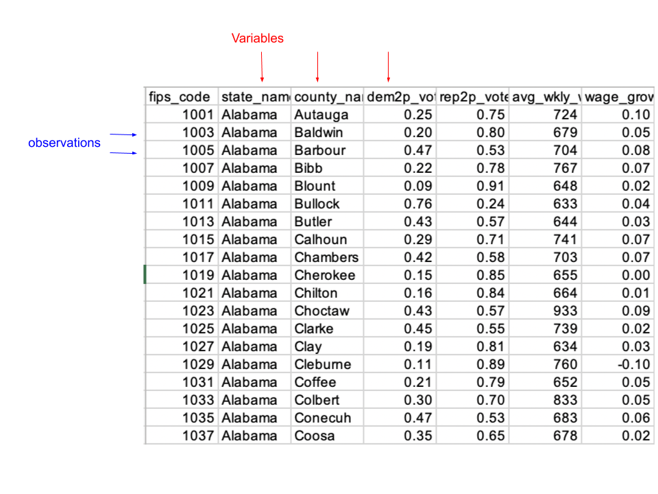

Learning Objectives
This tutorial is designed to familiarize you with some of the basics of using R. Specifically, you will learn:
- How to read in R data or .RData files with the
load()function - How to read in comma separated or .csv files, tab delimited or .txt
files, and Stata data or .dta files using the
import()function from the rio package - How to get to know the structure of your data with the
class(),View(),nrow(),ncol(),names(),head(),str(),is.na(),sum()functions - How to access variables in a data frame using $
- How to execute simple functions on variables:
mean(),min(),max(), andrange() - How to identify the value of a variable associated with the minimum or maximum value of another variable
- How to create a new variable and store it in a data frame
- How to use the
save()function to save objects as a .RData file
Data Files
The data we looked at in Part 1 was manually entered. More likely, we will work with a data set created somewhere else or by someone else that has been saved as one of several types of files. Regardless of the type of data file, data sets share a common structure. You can think of a spreadsheet. Each row of the data set contains data for one observation: values of all variables for a single case. Each column of the data set contains values of a single variable for all observations.
Each row of the data set below contains an observation for a single county in the US. Each column records values of variables measured for each county in the 2016 presidential election.

R will read in virtually any type of data file you might wish. We
will introduce the load() function for reading in R data
(.RData) files and the import() function in the R package
rio for reading in comma-delimited
(.csv), Excel (.xls and .xlsx) Stata data (.dta) files, and
tab-delimited (.txt) files. Other types of files can be read with
import(), but this covers all the types of files we will
use this semester. (Note: There are also separate functions in R that
can be used to read in .csv, .xls, .xlsx, and dta files. You are welcome
to use these, but they are not introduced here.)
Loading R data files (extension .RData)
R has its own file format, denoted with .RData, .rdata, or .rda. We
use the load() function to read in these files.
Important: Note that when the file has loaded, the
objects it contains will already exist. This means you do not assign the
result of load() to a new object. If you do so, it will
have no effect. To learn the name of any objects in the .RData file, we
use the verbose argument inside load(), and
set it equal to TRUE. If you do not include verbose = TRUE
you will not know the name of the objects in the file.
When naming the file containing the data, you will need to tell the function where the file is located. If the data file is in the same directory as the file containing your code, no path is required. But if the data is not in your working directory, you will need to specify a full path.
Try it: Load the data and view the contentsload("counties2016.RData", verbose = TRUE)Now that we know the name of the object the file contains, we can examine counties by entering the name of the object and running the code.
Try it: View the datacountiesYou can navigate around this file. To see more variables click on the black triangle at the top right. To see more observations select the blue numbers on the bottom of the output.
Importing other file types
You can import all files in all kinds of data formats in R using
various packages. To simplify, we will use the import()
function in the R package rio. The
function uses the file extension to determine the file type and then
runs the appropriate functions behind the scenes so that you don’t have
to learn the functions for each file type.
Important: Unlike .RData files, you need to assign
the file to an object. Commit this fact to memory. Students often forget
to assign the results of the import() function to a named
data frame or they try to assign the results of the load()
function to a named data frame.
Here again, if the file is not in the same directory as your code
file, you will need to specify the path to tell import()
where to find the data file.
Because the functions in the package rio are not a part of base R, we need to
load the package with the library() function before we can
use the import() function. (I have already installed this
package for use in the tutorial.)
Comma-separated files
Let’s import the comma-separated (.csv) file, unitednations.csv, and examine its contents. Here, I’ve assigned the file to the object unFBposts. But you could name it anything you like, as long as it does not start with a number or include reserved characters like $ and #.
Try it: Load the data and view the contentslibrary(rio)
unFBposts <- import("unitednations.csv")
unFBpostsExcel files
We import an Excel file in exactly the same manner. Let’s import the file “example_data.xlsx.” I’m naming this object df, short for data frame, but again, you may choose whatever you like. If you want to edit the code below to give the object a different name, try it. You’ll need to replace the name in both places.
Try it: Load the data and view the contentslibrary(rio)
df <- import("example_data.xlsx")
dfStata data files
A Stata data file can be imported in the same manner. Stata data files will have a .dta extension. See if you can write the code to import “oilwomen.dta” without looking. (Don’t forget to load the rio.) Name your new object oil and then print it.
Practice: Load the data# Hint 1 of 3: Similar to previous examples
This follows the same pattern as importing the CSV and Excel files. Use the import() function
from the rio package with the filename. Do not forget to load rio wih the library() function!# Hint 2 of 3: Assignment and filename
Assign the result to a new object called oil using the assignment operator. The filename is
"oilwomen.dta" and should be in quotes.# Hint 3 of 3: Display the data
After importing and assigning to oil, type the object name on a second line to print it and see the data.library(rio)
oil <- import("oilwomen.dta")
oilTab-delimited files
Surprise, if we have a tab-delimited data file, we do the same thing! Read in “turnout2.txt,” assign it to the object TO and print it. You may assume the rio package is already loaded.
Practice: Load the data# Hint 1 of 3: Same import process
The import() function works the same way for tab-delimited .txt files as it does for CSV, Excel,
and Stata files. Use the same approach you've been practicing.# Hint 2 of 3: Object name and filename
Assign the imported data to an object called TO (all uppercase). The filename to import is
"turnout2.txt" in quotes.# Hint 3 of 3: Print the result
After the import and assignment, type TO on a second line to display the data frame contents.TO <- import("turnout2.txt")
TOLearning about the data
The first step after loading a data set is to learn something about its contents. We will use the data set unitednations.csv, which we loaded as the object unFBposts. The data contains information related to the social media posts published on the United Nations Facebook page during 2015. Write the code below to determine the class of this object.
Practice: Identify the class of unFBposts
# Hint 1 of 1: class
Place the name of the object inside the class function.class(unFBposts)Each data set you read into R this semester will have the class
data.frame. A data frame is a table or a two-dimensional
array-like structure in which each column contains values of one
variable and each row contains one set of values from each column. In
other words, it looks like the Excel sheet at the beginning of this
tutorial.
Viewing the contents of a data frame
As we saw above, you can view the data by simply typing its name. But
you can view the contents of a data frame using the View()
function or by double-clicking on the object name in the Global
Environment tab in R Studio as well. (Note that this function begins
with a capital letter.) This will open the data in a new window, which
can make it easier to examine in full. No matter how you do so, it’s a
good idea to view your data frame to make sure you have loaded the data
you intended. Note, however, that you cannot execute this function from
within the tutorial. We will not run this function inside the
tutorial.
View(unFBposts)Determining the number of rows and columns
Each row of a data frame contains a single observation, here a unique
Facebook post. The nrow() function returns the number of
rows in the data frame. Simply pass the nrow() function the
name of the data frame object. How many posts are in the data frame?
nrow(unFBposts)Can you determine how many posts were published, on average, per day in 2015 (assume 365 days in the year)?
Practice: Compute the average number of posts# Hint 1 of 1: Average number of posts
There are 365 days in this year and the number of rows in the data is given by
nrows(unFBposts), so divide the latter by the former.nrow(unFBposts) / 365Each column of a data frame contains a single variable. We use the
ncol() function to learn the number of columns in the same
manner as we used the nrow() function to learn the number
of rows. How many variables are in unFBposts?
# Hint 1 of 2: Number of columns
Recall each row of the data set contains data for one observation and each column of the
data set contains values of a single variable. The nrow() function was used for determining
the number of rows, what function would serve to determine the number of columns? # Hint 2 of 2: Number of columns
Place the data object inside the ncol() function.ncol(unFBposts)Determining variable names
We’ve learned unFBposts contains 1643 Facebook posts (rows) and 9 variables (columns).
We can see the names of the variables in our data.frame using the
names() function we introduced in the R Basics tutorial
Part 1. Just pass this function unFBposts.
# Hint 1 of 1: Names
Place the name of the data object inside the names function.names(unFBposts)| Name | Description |
|---|---|
| type | Type of post (e.g., link, photo, video). |
| date | Date when the post was published. |
| likes_count | Total number of likes on the post. |
| comments_count | Total number of comments on the post. |
| shares_count | Total number of shares of the post. |
| month | Numeric month when the post was published (1–12). |
| url | Direct URL of the post. |
| message |
Text content of the post; NA if no text.
|
The head() and str() functions
We can examine the first few rows of the data frame using the
head() function. By default, it prints the first 6 rows. To
look at more or fewer rows, specify the n argument.
head(unFBposts, n = 5)The str() function displays the structure of the data
frame. Specifically, it provides the number of observations and
variables and then lists each variable along with its type and the
values of the first few observations.
str(unFBposts)The letter abbreviations that appear to the right of the column names (after the colon) describe the type of data that is stored in each column of unFBposts. Possible types include:
- int: integers.
- dbl: doubles, or real numbers.
- chr: character vectors, or strings.
- dttm: date-times (a date + a time).
- fct: factor (categorical variable)
Look carefully at the output to see what you can learn about the data before continuing.
The summary() function
The summary() function can be used to obtain some basic
descriptive information about the contents of a data frame object. What
information is displayed will depend on the class of the variable. For
numeric variables, it will report the minimum value, the value at the
1st quartile (the value associated with the 25th percentile), the
median, the value at the third quartile (the value associated with the
75th percentile), and the maximum value.
summary(unFBposts)See if you can see the differences in the information provided for character and numeric variables.
Working with variables in a data.frame
Often we will want to access a specific variable in a data frame. To
do so we use the $ operator. Specifically, we type
DATA_FRAME_NAME$COLUMN_NAME. So, if we wanted to print the contents of
the variable type in the data frame
unFBposts, we would refer to it using
unFBposts$type.
unFBposts$typeThese are the values of the variable type.
Missing values
When working with data frames, often some observations will not have
data on one or more variables. A missing value code is assigned to these
observations. We can use the is.na() function to learn
about missing values. This function takes one argument, the name of the
vector whose values we wish to evaluate. The function returns a TRUE if
a value of the vector is missing and FALSE if a value is not
missing.
is.na(unFBposts$message)We can use this function to determine how many posts do not have any
text (which are denoted with missing values). We need to wrap the
sum() function around the is.na() function to
answer this question. The sum() function will count the
number of TRUE entries in the vector of messages.
See if you can write the code without looking at the hints.
Practice: Observe NA value in the column# Hint 1 of 2: Understanding the approach
You need to combine two functions: one to identify missing values and another to count how
many TRUE values result from that check. Think about which function identifies missing
values# Hint 2 of 2: Building the inner function
Place is.na(unFBposts$message) inside the sum() function. Make sure you have matching
parentheses - two opening and two closing.sum(is.na(unFBposts$message))How many missing values are there for the variable likes_count?
Practice: Count the NA value in the column# Hint 1 of 1: Count NA values
Wrap the sum function around the is.na function applied to likes_count. Don't forget to
name the data object$ before listing the variable name.sum(is.na(unFBposts$likes_count))You can also calculate the number of values of a variable that are
not missing. The only difference is that you put an
! in front of the is.na() function. This
signifies not missing. How many values of
likes_count are not missing?
# Hint 1 of 1: Count NA values
Wrap the sum function around the !is.na function
applied to likes_count. Don't forget to name the
data object$ before listing the variable name.sum(!is.na(unFBposts$likes_count))Handling missing values
Some functions will not work if there are missing values present. Above, we learned that there are 173 messages with no content. These are missing a message. None of the other variables have missing values. But often, we will encounter variables that are missing a value for at least one entry.
If there are missing values in a vector, we include
na.rm = TRUE (TRUE must be all caps) as an argument to many
functions to tell R to ignore the cases with missing values when
executing the function.
Let’s calculate the mean number of shares for UN Facebook posts, allowing for missing values (there are not any so we would get the same value if we did not use this option but we would get an error if we omit the option when there are missing values).
Try it: Calculate the mean ignoring NA valuesmean(unFBposts$shares_count, na.rm = TRUE)Indexing in a data frame
We can use indexing to select rows and columns in a data frame, but unlike with a vector, we have two dimensions, so we specify the row and column index of interest.
For example, to see the 3rd row in the 2nd colum of unFBposts we use square brackets and list the row number, followed by a comma, and the column number:
Try it: Observe specific observation and columnunFBposts[3, 2]If we want to list all values of a particular variable, say type, we leave the row number blank. If we want a sequence of row (or column numbers), we use the smallest value followed by a colon and the largest value (no spaces). We can also give the variable name in quotes rather than the column number. The code below prints rows 10-15 of the variable type.
Try it: Observe observation and columnunFBposts[10:15, "type"]Identifying the value(s) of a variable associated with the maximum/minimum values of another variable
You will often want to use indexing to identify the case(s)
associated with an outlier or maximum or minimum value of a given
variable. For example, you might want to know which message had the most
likes in this data set. To do so, you specify the variable of interest,
likes_count, within the data frame unFBposts. By using
the which() function combined with a conditional statement,
unFBposts$likes_count == max(unFBposts$likes_count, na.rm = TRUE),
you instruct R to pinpoint the index or indices where
likes_count achieves its largest value after accounting
for any missing data (na.rm = TRUE). Once these indices are
identified, they are used to fetch the corresponding message associated
with the most likes. In this specific instance, since only one message
has the highest count of likes, the code returns that singular
message.”
Look carefully at this code, we will be using the
which() function frequently this semester to identify cases
(e.g., states or countries) that have the maximum value of a given
variable!
unFBposts$message[which(unFBposts$likes_count == max(unFBposts$likes_count, na.rm = TRUE))]Let’s dissect this code further.
max(unFBposts$likes_count, na.rm = TRUE): This part of the code calculates the maximum value within the likes_count column of the unFBposts data frame. Thena.rm = TRUEargument ensures that any missing or NA values within this column are ignored during the calculation. Essentially, this determines the highest number of likes any message has received.unFBposts$likes_count == max_value: Here max_value refers to the results of previous bullet point. After determining the maximum value, the code checks every entry in the likes_count column to see which one(s) match this highest value. When you compare the entire column against this maximum value, you get a logical vector (i.e., a series of TRUE and FALSE values). Each TRUE indicates an entry where the number of likes matches the maximum value.which(...): Finally, thewhich()function is applied to this logical vector. Its role is to extract the indices where the condition(unFBposts$likes_count == max_value)is TRUE. This gives you the row or rows in the data frame where the message received the maximum number of likes.
You may want also to find the message with the minimum (or maximum) value. It turns out in this data set there are many messages with zero shares and likes. To avoid printing many, many messages, let’s try finding the message with the maximum number of shares using shares_count.
Practice: Observe the message with the most shares_counts# Hint 1 of 4: Overall structure
You need to index the message variable using square brackets. Inside those brackets, use
which() to find the row(s) where shares_count is at its maximum.# Hint 2 of 4: Finding the maximum
Use max(unFBposts$shares_count, na.rm = TRUE) to find the highest value of shares.
The na.rm = TRUE ensures missing values do not cause problems.# Hint 3 of 4: Creating the condition
Compare unFBposts$shares_count to its maximum value using two equal signs (==).
This creates a logical condition that is TRUE where shares equals the maximum.# Hint 4 of 4: Putting it together
Use which() around your comparison to find row numbers, then use those to index
unFBposts$message[]. The structure is: variable[which(condition)].unFBposts$message[which(unFBposts$shares_count == max(unFBposts$shares_count, na.rm = TRUE))]Often you will want to know not only the case with the maximum (or minimum value), but also the value it takes. To find the number of shares associated with the message with the most shares we pass the same condition, but now as an index condition after shares_counts:
Try it: Identify the number of shares associated with the message with the maximum number of shares_countunFBposts$shares_count[which(unFBposts$shares_count == max(unFBposts$shares_count, na.rm = TRUE))]Try finding the number of likes (likes_count) for that message:
Practice: Observe specific observation and column# Hint 1 of 3: Same row, different variable
You want the likes_count for the same message that had the most shares. Use the same
which() condition you saw in the example above, but apply it to likes_count instead of
shares_count.# Hint 2 of 3: Structure
Use unFBposts$likes_count followed by square brackets. Inside the brackets, place the
which() condition that identifies the row with maximum shares.# Hint 3 of 3: The condition
The condition inside which() should still compare shares_count to its maximum value. You
are using that to find the right row, then getting the likes_count value from that row.unFBposts$likes_count[which(unFBposts$shares_count == max(unFBposts$shares_count, na.rm = TRUE))]This message was shared 2513 times and liked 2249 times!
Creating a new variable in a data frame
Often you will want to create a new variable from those already in the data frame and have that new variable be stored in the data frame. For example, we might want to create a variable that counts the total number of likes and shares a post receives. To do so, we first select a name for the new variable, let’s call it like.or.share. To have that variable created inside the data frame unFBposts, we type unFBposts$like.or.share. To that variable we assign the sum of the variables likes_count and shares_count. Each of these variables most also be prefaced with unFBposts$ so that R knows to find them in the data frame unFBposts. This code will not produce any output on your screen.
Try it: Create a new variable in unFBpostsunFBposts$like.or.share <- unFBposts$likes_count + unFBposts$shares_countWe can examine the first few values of this new variable using the
head() function.
head(unFBposts$like.or.share)Try creating a variable called attention that is the sum of all types of attention paid to a post: likes (likes_count), shares (shares_count), and comments (comments_count). Store the new variable in the data frame unFBposts and list the first few values.
Practice: Create a new variable called attention in unFBposts# Hint 1 of 3: Creating the new variable
Create a new variable called attention in the unFBposts data frame using the assignment
operator. The structure is: unFBposts$attention <- expression# Hint 2 of 3: Calculating the sum
Add together three variables using the plus sign: likes_count, shares_count, and
comments_count. Each variable needs to be preceded by unFBposts$ so R knows where
to find them.# Hint 3 of 3: Viewing the results
After creating the variable, use the head() function to display the first few values of
unFBposts$attention. This should be on a separate line.unFBposts$attention <- unFBposts$likes_count + unFBposts$shares_count + unFBposts$comments_count
head(unFBposts$attention)Saving the data
Objects we create in an R session will be temporarily saved in the
workspace, which is just the current working environment. If we
want to save them permanently, we could save the workspace. R
will ask us if we want to save the workspace every time we exit.
Say no! Instead, if you want to save the objects (or
some subset of the objects) you’ve created in your R session, use the
save() function, which takes as arguments the names of the
objects you wish to save and the name of the file to give your new data
file.
The following code saves unFBposts as an R data set, but it cannot be run from the tutorial.
Example Code: Save the new data
save(unFBposts, file = "/Users/sld8/Dropbox/PLSC309/MyDataFile.Rdata")If we had created new objects separate from those in unFBposts, saving unFBposts will not save them.
Practice
Using the functions we’ve covered so far, do your best to answer the following questions.
Practice: Determine the number of posts
- How many posts were published in 2015? Recall that each row of the data frame unFBposts contains a post.
# Hint 1 of 2: Counting rows
Each row represents one post, so counting the total number of rows tells you how many posts
were published. Think about which function returns the number of rows in a data frame.# Hint 2 of 2: The function
Use the nrow() function with the name of the data frame (unFBposts) inside the parentheses.nrow(unFBposts)Practice: Determine the text of the first post
- What was the text of the first post (“message”) in the data frame unFBposts?
# Hint 1 of 2: Accessing a specific row
You need to access the message variable and use indexing with square brackets to select the
first observation. The structure is: variable[row_number]# Hint 2 of 2: Specifying the first row
Use unFBposts$message followed by square brackets. Inside the brackets, put the number 1
to get the first row.unFBposts$message[1]Practice: Calculate the mean of likes
- How many likes (“likes_count”) did posts in the data frame unFBposts receive on average?
# Hint 1 of 2: Calculating averages
Use the mean() function with the likes_count variable from the unFBposts data frame.
Remember to specify the variable using the dollar sign notation.# Hint 2 of 2: Handling missing values
Include the argument na.rm = TRUE inside the mean() function to ensure any missing values
are excluded from the calculation.mean(unFBposts$likes_count, na.rm = TRUE)Practice: Calculate the mean of comments
- How many comments (“comments_count”) did posts in the data frame unFBposts receive on average?
# Hint 1 of 2: Calculating averages
Use the mean() function with the comments_count variable from the unFBposts data frame.
Access the variable using the dollar sign notation.# Hint 2 of 2: Handling missing values
Add na.rm = TRUE as an argument inside the mean() function to exclude any missing values
from the calculation.mean(unFBposts$comments_count, na.rm = TRUE)Practice: Calculate the mean of shares
- How many shares (“shares_count”) did posts in the data frame unFBposts receive on average?
# Hint 1 of 2: Finding the average
Apply the mean() function to the shares_count variable in the unFBposts data frame using
dollar sign notation to access the variable.# Hint 2 of 2: Missing value argument
Include na.rm = TRUE inside the mean() function to properly handle any missing values in
the data.mean(unFBposts$shares_count, na.rm = TRUE)Practice: Check the maximum of comments
- What was the largest number of shares (“shares_count”) a post in the data frame unFBposts received?
# Hint 1 of 2: Finding maximum values
Use the max() function to find the largest value in the shares_count variable from the
unFBposts data frame.# Hint 2 of 2: Handling missing values
Add na.rm = TRUE as an argument inside the max() function to ensure missing values do not
interfere with finding the maximum.max(unFBposts$shares_count, na.rm = TRUE)Practice: Check the minimum of likes
- What was the smallest number of likes (“likes_count”) a post in the data frame unFBposts received?
# Hint 1 of 2: Finding minimum values
Use the min() function to find the smallest value in the likes_count variable from the
unFBposts data frame.# Hint 2 of 2: Missing value handling
Include na.rm = TRUE as an argument inside the min() function to properly exclude any
missing values.min(unFBposts$likes_count, na.rm = TRUE)Practice: Check the range of shares
- What was the range of the number of shares (“shares_count”) a post in the data frame unFBposts received?
# Hint 1 of 2: Finding the range
Use the range() function to find both the minimum and maximum values of shares_count in the
unFBposts data frame.# Hint 2 of 2: Handling missing values
Add na.rm = TRUE inside the range() function to ensure missing values are excluded when
calculating the range.range(unFBposts$shares_count, na.rm = TRUE)The Takeaways
This tutorial introduced you to working with real data files and data frames in R. These skills form the foundation for all data analysis projects you’ll encounter throughout the semester. We’ve learned:
Different file formats require different loading approaches: Understanding how to import various data types is essential for working with real-world datasets. Key principles include:
- R data files (.RData): Use
load()function and do not assign to an object - the objects are automatically created with their original names. - Other formats (.csv, .xlsx, .dta, .txt): Use
import()from the rio package and always assign the result to a named data frame object. - Package loading: Remember to load the rio package with
library(rio)before using theimport()function.
- R data files (.RData): Use
Data exploration is the critical first step: Before analyzing data, you must understand its structure and contents. Essential exploration functions include:
- Structure assessment: Use
class(),nrow(),ncol(), andnames()to understand the basic dimensions and variable names. - Content examination: Use
head(),str(), andsummary()to examine actual data values and variable types. - Missing value detection: Use
is.na()combined withsum()to identify and count missing values in your variables.
- Structure assessment: Use
The dollar sign operator ($) accesses variables within data frames: Most data analysis involves working with individual variables from larger datasets. Critical concepts include:
- Variable access: Use
dataframe$variablesyntax to access specific columns from your data frame. - Missing value handling: Include
na.rm = TRUEin functions likemean(),max(), andmin()when missing values are present. - Function application: Apply statistical functions directly to variables using the dollar sign operator.
- Variable access: Use
Indexing and conditional selection enable targeted data analysis: Finding specific observations or extreme values requires understanding R’s indexing system. Key techniques include:
- Two-dimensional indexing: Use
[row, column]notation to access specific cells, rows, or columns in data frames. - Conditional selection: Combine
which()with logical conditions to identify cases that meet specific criteria. - Extreme value identification: Use
max()andmin()within conditional statements to find observations with highest or lowest values.
- Two-dimensional indexing: Use
Creating new variables expands analytical possibilities: Real analysis often requires combining or transforming existing variables. Important principles include:
- Variable creation: Use
dataframe$newvariable <- expressionto create and store new variables within existing data frames. - Arithmetic operations: Combine existing variables using standard mathematical operators (+, -, *, /).
- Data persistence: Save important datasets using
save()function to preserve your work for future analysis.
- Variable creation: Use
The skills you’ve practiced here—importing data files, exploring data structure, accessing variables, handling missing values, and creating new variables—will be essential in every data analysis project throughout the course. Master these fundamentals, as they form the building blocks for more sophisticated analytical techniques in upcoming tutorials.
Success: You’ve mastered the basics!